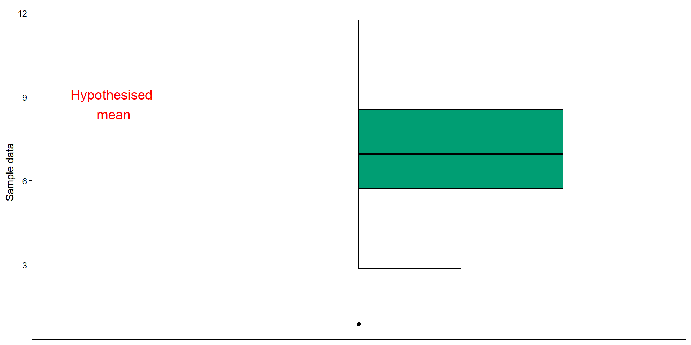
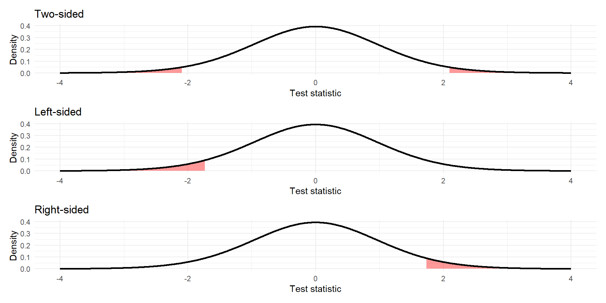
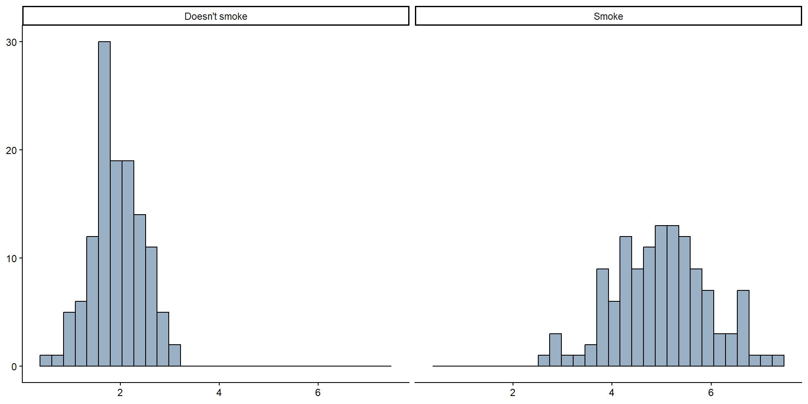
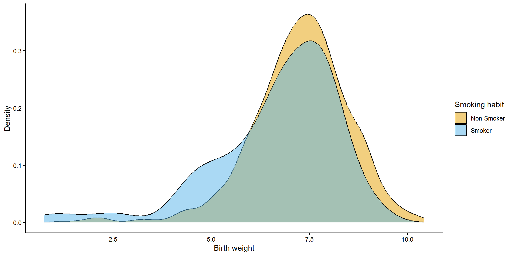
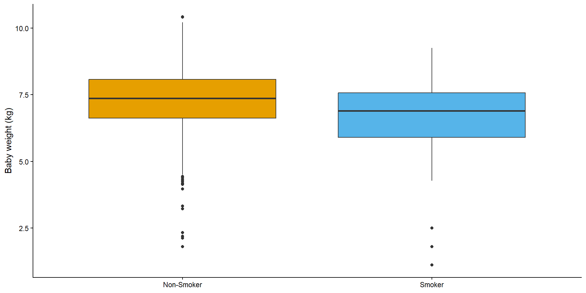

| Type | Null Hypothesis | Alternative Hypothesis |
|---|---|---|
| Two-sided | $H_0: \mu = \mu_0$ | $H_1: \mu \neq \mu_0$ |
| Left-sided | $H_0: \mu \geq \mu_0$ | $H_a: \mu < \mu_0$ |
| Right-sided | $H_0: \mu \leq \mu_0$ | $H_a: \mu > \mu_0$ |
ST201 - Data analysis
In the previous lecture, we looked at estimating population means using confidence intervals.
Today, we will use sample data to test hypotheses about population means.
R.The main question is:
Does the evidence from our sample suggest that a population mean, or the difference between two population means, is different from a particular value?
A hypothesis test is a statistical procedure used to assess whether sample data provide evidence against a statement about a population parameter.
For example, we might want to investigate:
We use sample data to assess these questions because we generally cannot observe the entire population.
Every hypothesis test involves two competing statements.
For example, suppose we want to investigate whether average student sleep differs from 8 hours.
\[H_0: \mu = 8\]
\[H_1: \mu \neq 8\]
Here, \(\mu\) represents the population mean number of hours of sleep.
The alternative hypothesis determines the type of test we carry out.
| Type | Null Hypothesis | Alternative Hypothesis |
|---|---|---|
| Two-sided | $H_0: \mu = \mu_0$ | $H_1: \mu \neq \mu_0$ |
| Left-sided | $H_0: \mu \geq \mu_0$ | $H_a: \mu < \mu_0$ |
| Right-sided | $H_0: \mu \leq \mu_0$ | $H_a: \mu > \mu_0$ |
The direction of the test must be chosen before examining the results.
We begin with a one-sample problem.
One sample
A quantitative variable
A hypothesised population mean \((\mu_0)\)

The test statistic measures how far the sample mean is from the hypothesised population mean, relative to the standard error.
\[ T_{\text{stat}} = \frac{\bar X-\mu_0}{s/\sqrt n} \]
Where:
If the null hypothesis is true and the assumptions are satisfied:
\[ T_{\text{stat}} \sim t_{n-1} \]
Before carrying out the test, we should consider the following conditions:
For larger samples, the t-test is generally more robust to departures from normality, provided there are no extreme outliers or substantial problems with the data.
We can use a histogram, boxplot and Q-Q plot to investigate the distribution.
We compare the evidence from our sample against a significance level, usually: \(\alpha=0.05\)
The significance level determines how much evidence we require before rejecting the null hypothesis.
There are two common approaches:
Compare the test statistic with a critical value
Compare the p-value with the significance level
We will mainly use the p-value approach
The rejection region depends on the alternative hypothesis.
For a significance level of \(\alpha=0.05\):
We reject \(H_0\) when the test statistic falls into the relevant rejection region.

Suppose we want to investigate whether students get an average of 8 hours of sleep per night.
We collect a random sample of 20 students and obtain:
Does the average number of hours of sleep differs from 8.
\[ \begin{aligned} H_0: \mu &= 8 \\ H_1: \mu &\neq 8 \end{aligned} \]
\[ SE=\frac{s}{\sqrt n} =\frac{2.40}{\sqrt{20}} \approx 0.537 \]
\[ T_{\text{stat}}= \frac{6.75-8}{0.537} \approx -2.33 \]
\[ T_{\text{stat}}=-2.33,\qquad df=19 \]
For a two-sided test with \(\alpha=0.05\), the critical values are approximately: \(\pm 2.093\)
Since our test statistic is smaller than \(-2.093\) we reject the null hypothesis
What does this tell us?
There is statistical evidence that the average number of hours of sleep among students differs from 8 hours.
The p-value measures how unusual our observed test statistic would be if the null hypothesis were true.
The p-value is the probability of obtaining a test statistic at least as extreme as the one observed, assuming the null hypothesis is true.
For a two-sided test, we consider extreme values in both tails of the distribution.
A small p-value indicates that the observed data would be relatively unusual if the null hypothesis were true.
| Result | Decision |
|---|---|
| p < 0.05 | Reject the null |
| p >= 0.5 | Fail to reject the null |
R has a built-in function called t.test().
For a one-sample t-test, we specify:
# Carry out a one-sample t-test
t.test(student_sleep$y, mu = 8, alternative = "two.sided")
##
## One Sample t-test
##
## data: student_sleep$y
## t = -4.3478, df = 99, p-value = 3.339e-05
## alternative hypothesis: true mean is not equal to 8
## 95 percent confidence interval:
## 6.616685 7.483638
## sample estimates:
## mean of x
## 7.050162A hypothesis test and a confidence interval are closely related.
For a two-sided test at the 5% significance level:
For the sleep example, the 95% confidence interval is approximately:
\[ \begin{aligned} & \bar{X} \pm \operatorname{T}(\operatorname{SE}) \\[8pt] & 6.75 \pm 2.093(0.537) = (5.63,\ 7.87) \end{aligned} \]
Since 8 is outside this interval, we reject the null hypothesis
So far, we have considered a single sample.
We now want to compare the means of two independent groups.
We want to investigate whether the population means differ
| Type | Null Hypothesis | Alternative Hypothesis |
|---|---|---|
| Two-sided | $H_0: \mu_x = \mu_y$ | $H_1: \mu_x \neq \mu_y$ |
| Left-sided | $H_0: \mu_x \geq \mu_y$ | $H_a: \mu_x < \mu_y$ |
| Right-sided | $H_0: \mu_x \leq \mu_y$ | $H_a: \mu_x > \mu_y$ |
OR
\[ \begin{aligned} H_0 &: \mu_x - \mu_y = 0 \\ H_a &:\mu_x-\mu_y \neq 0 \end{aligned} \]

To compare two independent population means, we calculate:
\[ T_{\text{stat}}= \frac{(\bar X-\bar Y)-0}{SE} \]
The standard error depends on the assumptions we make about the population variances.
There are two common approaches:
If we assume the two populations have the same variance, we can combine the sample variances to calculate a pooled estimate.
This is called the pooled variance
\[ s_p^2=\frac{(n-1)s_x^2+(m-1)s_y^2} {n+m-2} \]
Where:
The pooled variance uses information from both samples
Once we have calculated the pooled variance, the test statistic is:
\[ T_{\text{stat}} = \frac{\bar X-\bar Y} {s_p\sqrt{\frac{1}{n}+\frac{1}{m}}} \]
\[ T_{\text{stat}}\sim t_{n+m-2} \]
\[ df = n + m - 2 \]
Conditions:
In practice, we do not always have good reason to assume that the population variances are equal.
Instead, we can use Welch’s two-sample t-test.
The test statistic is:
\[ T_{\text{stat}}= \frac{\bar X-\bar Y} {\sqrt{\frac{s_X^2}{n}+\frac{s_Y^2}{m}}} \]
The standard error is calculated separately for each group and then combined
In R, t.test() uses Welch’s test by default.
We can request the pooled test by setting:
Every year, the US releases a dataset containing information about births recorded across the country.
We will use a sample of 1,000 births from the 2014 dataset.
We are interested in whether babies born to mothers who smoke have a different average birth weight from babies born to mothers who do not smoke.
openintro::births14
## # A tibble: 1,000 × 13
## fage mage mature weeks premie visits gained weight lowbirthweight sex
## <int> <dbl> <chr> <dbl> <chr> <dbl> <dbl> <dbl> <chr> <chr>
## 1 34 34 younger m… 37 full … 14 28 6.96 not low male
## 2 36 31 younger m… 41 full … 12 41 8.86 not low fema…
## 3 37 36 mature mom 37 full … 10 28 7.51 not low fema…
## 4 NA 16 younger m… 38 full … NA 29 6.19 not low male
## 5 32 31 younger m… 36 premie 12 48 6.75 not low fema…
## 6 32 26 younger m… 39 full … 14 45 6.69 not low fema…
## 7 37 36 mature mom 36 premie 10 20 6.13 not low fema…
## 8 29 24 younger m… 40 full … 13 65 6.74 not low male
## 9 30 32 younger m… 39 full … 15 25 8.94 not low fema…
## 10 29 26 younger m… 39 full … 11 22 9.12 not low male
## # ℹ 990 more rows
## # ℹ 3 more variables: habit <chr>, marital <chr>, whitemom <chr>
We want to investigate whether there is a difference between the two population means.
\[ H_0:\mu_S = \mu_N \]
\[ H_a:\mu_S\neq\mu_N \]
This is a two sided test
We are interested in whether average birth weight differs between the two groups.

t.test(
weight ~ habit,
data = openintro::births14,
alternative = "two.sided",
var.equal = FALSE
)
##
## Welch Two Sample t-test
##
## data: weight by habit
## t = 3.8166, df = 131.31, p-value = 0.0002075
## alternative hypothesis: true difference in means between group nonsmoker and group smoker is not equal to 0
## 95 percent confidence interval:
## 0.2854852 0.8998751
## sample estimates:
## mean in group nonsmoker mean in group smoker
## 7.269873 6.677193The data provide statistical evidence of a difference in average birth weight between babies born to mothers who smoked during pregnancy and babies born to mothers who did not smoke.
We can also estimate the difference between two population means using a confidence interval.
\[ \mu_d=\mu_X-\mu_Y \qquad \qquad \hat{\mu}_d = \bar{X} - \bar{Y} \]
\[ (\bar X-\bar Y)\pm t_{\nu,1-\alpha/2}\times SE \]
Today we have learned how to carry out hypothesis tests for population means.
Remember